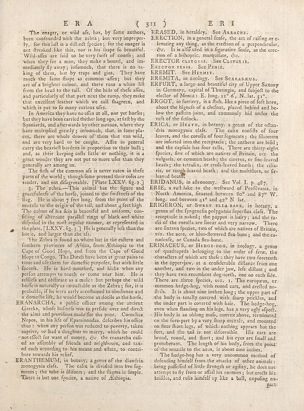

Scan ID britannica:309f765b1ecc83e0a7f7762e44b4a927a7555443:train:2473
Image SHA-256 b849fb7f25f25b39685069d12c13b17d47169beeea958446bdff439c230a0f65
Status: ok. Running header: none (none). Removed page furniture: none.
PDF · raw Parse reply · LaTeX
Entries: E0231 ERANARCHIA ERANTHEMUM ERASED ERECTION ERECTOR PENIS EREMIT EREMITA ERFURT ERGOT ERICA ERIDANUS ERIE ERIGERON ERINACEUS

| # | Class | Box | Parse 3.5 | Used text | Source |
|---|---|---|---|---|---|
| 0 | Section-header | [0.2021, 0.0453, 0.5527, 0.0672] | E R A ( sit) | ERA (sit) | super_vl |
| 1 | Text | [0.0713, 0.0711, 0.4795, 0.2695] | The onager, or wild afs, has, by fome authors, been confounded with the zebra; but very improperly, for this latit is a distinct species. for the onager is not freeskall for this, now is his shape of favourite. "Wild also are fail to be very twift of course’s and when they fee a man, they make a bound, and im- medically fly away; I donuts, that there is no is king of them, but by vraps and guns. They have much the fame these as common affes; but they are of a brighter colour, and there runs a white lift from the head to the tail. Of the hides of theirs, and particularly of that part next the | The onager, or wild ass, has, by some authors, been confounded with the zebra; but very improperly, for this last is a distinct species; for the onager is not freaked like this, nor is his shape so beautiful. Wild asses are said to be very swift of course; and when they see a man, they make a bound, and immediately fly away; insomuch, that there is no taking of them, but by traps and gins. They have much the same shape as common asses; but they are of a brighter colour, and there runs a white lift from the head to the tail. Of the hide of these asses, and particularly of that part next the rum | super_vl |
| 2 | Text | [0.0586, 0.2711, 0.4785, 0.4102] | In America they have nooffs at all, nor yet horles; but they have been carried thither long ago, atift by the Spaniards, and afterwards byother nations, where they have multiple greatly; ionomisch, that, in fome places, there are whole drows of them that run wild, and are very hard to be caught. Afes in general carry the bloodwell borders in proportion to their bulk; and, a their keeping coll little or nothing, it is a great wonder they are not put to more ufes than they generally are among us. | In America they have no asses at all, nor yet horses; but they have been carried thither long ago, at first by the Spaniards, and afterwards by other nations, where they have multiplied greatly; insomuch, that, in some places, there are whole droves of them that run wild, and are very hard to be caught. Asses in general carry the heaviest burdens in proportion to their bulk; and, as their keeping costs little or nothing, it is a great wonder they are not put to more uses than they generally are among us. | super_vl |
| 3 | Text | [0.0615, 0.4094, 0.4766, 0.4508] | The flesh of the common afs is never eaten in thefe parts of the world; though home pretend their colts are tender, and not difagreeable. [Plate LXXV. fig.2] | The flesh of the common ass is never eaten in these parts of the world; though some pretend their colts are tender, and not disagreeable. [Plate LXXV. fig. 2.] | super_vl |
| 4 | Text | [0.0596, 0.45, 0.4756, 0.5766] | 5: The idea—This animal has the figure and gracefulness of the horse, claimed to the firstness of the flag. He is about 7 feet long, from the point of the muzzle to the origin of the tall, and about, feet high. The colon of his him is beautiful and uniform, con- filing of alternate parallel rings of black and white dipuled in the melt regular manner, as reprefeden in the place, lEXXY, fig.3]. He is generally left than the horse, and larger than the afsl. | 3. The zebra.—This animal has the figure and gracefulness of the horse, joined to the swiftness of the flag. He is about 7 feet long, from the point of the muzzle to the origin of the tail, and about 4 feet high. The colour of his skin is beautiful and uniform, confifting of alternate parallel rings of black and white disposed in the most regular manner, as reprefented in the plate, [LXXV. fig. 3.] He is generally less than the horse, and larger than the ass. | super_vl |
| 5 | Text | [0.0576, 0.5773, 0.4746, 0.7305] | ‘the Zebra is found no where but in the others and fourteen provinces of Africa, New Ethiopia to the Cape of Good Hope, and from the Cape of Good Hope to Congo. The Dutch have been at great pains to tame and die them for domestic purposes, but with little friends. He is in half monthock, and kicks when any person attempts to touch or come near him. He is scellle and oblitiare as a multe : but perhaps the wild holde is naturally as unsuitable as the Zebra; for, it is probably. If were early occultured to obdelense and a domelie life, he would become as docile as the horle. | the Zebra is found no where but in the eastern and southern provinces of Africa, from Ethiopia to the Cape of Good Hope, and from the Cape of Good Hope to Congo. The Dutch have been at great pains to tame and use them for domestic purposes, but with little success. He is hard-mouthed, and kicks when any person attempts to touch or come near him. He is restless and obfuscate as a mule: but perhaps the wild horse is naturally as untractable as the Zebra; for, it is probable, if he were early accustomed to obedience and a domestic life, he would become as docile as the horse. | super_vl |
| 6 | Text | [0.0566, 0.7297, 0.4736, 0.868] | ERANARCHIA, a public officer among the ancient Greek, which bullets was to pedide over and direct the alms and provins made for the poor. Cornelius Nepos, in his lit of Espainindodas, deferibes his office thus; when any period was reduced so poverty, taken captive, or had a daughter to marry, which he could not effect for want of money, etc. the eranarcha call- ed an offender of friends and neighbours, and tax- ed each according to his means and ethars, to contri- bute towards his relief. | ERANARCHIA, a public officer among the ancient Greeks, whose business was to preside over and direct the alms and provisions made for the poor. Cornelius Nepos, in his life of Epaminondas, describes his office thus: when any person was reduced to poverty, taken captive, or had a daughter to marry, which he could not effect for want of money, &c. the eranarcha called an assembly of friends and neighbours, and taxed each according to his means and estate, to contribute towards his relief. | super_vl |
| 7 | Text | [0.0557, 0.8688, 0.4727, 0.9289] | ERANTHEUMUJ, in botany; a genus of the diandria, menogyalda. The coloris its divided into five tag- ments if the tribe is filomn y and the flagan is limple. There is but one facies, a native of Ethiopia. | ERANTHEMUM, in botany, a genus of the diandria monogynia class. The calix is divided into five segments; the tube is filiform; and the fligma is limple. There is but one species, a native of Ethiopia. | super_vl |
| 8 | Text | [0.4951, 0.0719, 0.8203, 0.0859] | ERASED, in heraldry. See ARRACHE. | ERASED, in heraldry. See ARRACHE. | super_vl |
| 9 | Text | [0.4961, 0.0867, 0.918, 0.1422] | RECTION, in a general fence, the art of railing or e- levating any thing, as the creation of a perpendicular, or. It is all collected in a figurative leafe, as the creo- tion of a abhorgic, inauguralus, etc. | ERECTION, in a general sense, the art of raising or e- levating any thing, as the erection of a perpendicular, &c. It is also used in a figurative sense, as the erec- tion of a bishopric, marquisate, &c. | super_vl |
| 10 | Text | [0.4971, 0.143, 0.8213, 0.1562] | REECTOR CLITORIS. See ClUTORIS. | ERECTOR clitoris. See Clitoris. | super_vl |
| 11 | Text | [0.4941, 0.157, 0.7373, 0.1695] | REKCTOR PISIS. See FISIS. | ERECTOR PENIS. See PENIS. EREMIT. See HERMIT. | super_vl |
| 12 | Text | [0.498, 0.1719, 0.7168, 0.1836] | REBMIT. See HEMIT. | EREMIT. See HERMIT. | super_vl |
| 13 | Text | [0.499, 0.1852, 0.8438, 0.1992] | REBMITA, in ecology. See SCARASRUS. | EREMITA, in zoology. See SCARABAEUS. | super_vl |
| 14 | Text | [0.5, 0.2, 0.916, 0.2406] | ERFURT, a large and beautiful city of Upper Saxony in Germany, capital of Thailand, and subject to the elckor of Menus; E. long.117 é', N.lax. 910. | ERFURT, a large and beautiful city of Upper Saxony in Germany, capital of Thuringia, and subject to the elector of Mentz: E. long. 11° 6', N. lat. 51°. | super_vl |
| 15 | Text | [0.4932, 0.2398, 0.917, 0.2961] | ERGOT, in farriers, is a flub, like a piece of loft horn, about the biguns of a chefut, placed behind and be low the pattern join, and commonly hide under the tufi of the fetlock. | ERGOT, in farriery, is a stub, like a piece of soft horn, about the bigness of a chestnut, placed behind and below the pastern-joint, and commonly hid under the tuft of the fetlock. | super_vl |
| 16 | Text | [0.4922, 0.2953, 0.9189, 0.4359] | ERICA, or Hearth, in benny, a genus of the other- dirina nonogona clade. The calise conflict of four leaves, and the corolla of four fragments; the filaments are infected into the receptacle; the anthem are bid; and the copilole has four cells. Three thirty eight-species, one of which are native of Britain, viz. the vulgaris, or common health; the cinerers, or fine-leaved hearts; the retraix, or crofs-leaved heads; the cilla- ray, or rough leaved heat; and the multidots, or fir- leaved heart. | ERICA, or Heath, in botany, a genus of the octan- dria monogynia class. The calix consists of four leaves, and the corolla of four segments; the filaments are inserted into the receptacle; the anthers are bifid; and the capsule has four cells. There are thirty-eight species, five of which are natives of Britain, viz. the vulgaris, or common heath; the cinerea, or fine-leaved heath; the tetralix, or cross-leaved heath; the ciliaris; or rough-leaved heath; and the multiflora, or fire- leaved heath. | super_vl |
| 17 | Text | [0.4912, 0.4367, 0.8799, 0.4516] | ERIDANUS, in altonomy. See Vol. I. p. 487. | ERIDANUS, in astronomy. See Vol. I. p. 487. | super_vl |
| 18 | Text | [0.4902, 0.4523, 0.915, 0.493] | ERRI, a wall take to the wellhead of Penfilivana, in North America, finances between 80^ and 89^ W. long. and between 41^ and 42^ N lat. | ERIE, a salt lake to the westward of Pennsylvania, in North America, situated between 80° and 87° W. long. and between 41° and 42° N lat. | super_vl |
| 19 | Text | [0.4893, 0.4953, 0.9141, 0.5914] | ERGGERON, or SWART PISTA BANS, in botany, a genus of the flygregering polyanthus/perchia clad. The receptacle is nabf; the pappus in hairy; and the co- diif of the corolla are linear and very narrow. There are sixteen species, and which are native of Britain, viz. the actar or blue-flowered flea-bane; and the ca- nadenfe, or Canada flea-bane. | ERIGERON, or SWEET FLEA BANE, in botany, a genus of the syngenesia polygamia superflua class. The receptacle is naked; the pappus is hairy; and the radii of the corolla are linear and very narrow. There are fifteen species, two of which are natives of Britain, viz. the acre, or blue-flowered flea-bane; and the canadense, or Canada flea-bane. | super_vl |
| 20 | Text | [0.4883, 0.5906, 0.9131, 0.8562] | ERNIACEUS, or Harca dosc in biology, a genus of arthropods belonging to the order of ferns, the characters of which are thefel; they have two foresteeth in the upperpaw, at a considerable distance from one another, and won in the under jaw. leaf claffant; and they have two recombinant dog-tetth, one on each file. There are three facies, viz. 1. The europeus, or common hedgehog, with round cars, and certified no-frilk. It is about nine inches than the year of the body is usually covered with flap prticles, and the under part is covered with hair. The hedge-hog, even when flanked on hijings, has | ERINACEUS, or Hedge-hog, in zoology, a genus of quadrupeds belonging to the order of seræ, the characters of which are these: they have two foreteeth in the upper jaw, at a considerable distance from one another, and two in the under jaw, left distant; and they have two recumbent dog-teeth, one on each side. There are three species, viz. 1. The europæus, or common hedge-hog, with round ears, and creted no-frils. It is about nine inches long; the upper part of the body is totally covered with sharp prickles, and the under part is covered with hair. The hedge-hog, even when flanding on his legs, | super_vl |
| 21 | Text | [0.5049, 0.8578, 0.9121, 0.9313] | The hedge-hog has a very uncommon method of defending himself from the attacks of other animals being purified of little through or agility, lie does not attempt to fly from to affill in corners; but stretch his brillies, and rolls himself up like a ball, exposing no- | The hedge-hog has a very uncommon method of defending himself from the attacks of other animals: being possessed of little strength or agility, he does not attempt to fly from or assail his enemies; but erects his bristles, and rolls himself up like a ball, exposing no- | super_vl |
Britannica scans: National Library of Scotland, CC0 1.0. Wikipedia text: Wikipedia contributors, CC BY-SA 4.0, revision links on each page. Generated 2026-10-18T13:26:14+00:00.